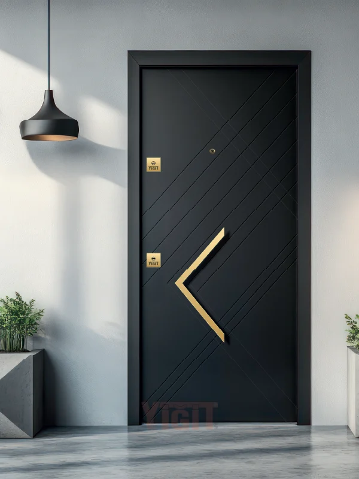

Sheet Panel Series
CODE: YC 174
Sheet Metal Panel
Product Code:
YC 174
ColorBlack
DesignStandard frame
FunctionStandard / Customizable
MaterialFull metal
• This model can be personalized with different color and frame options.
• The same design becomes uniquely yours with different combinations.
×